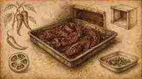
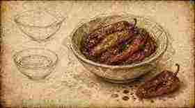
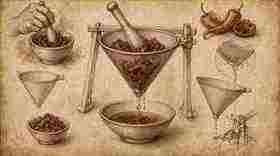
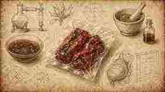
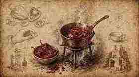
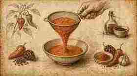
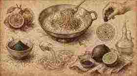
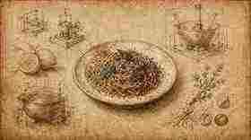

01
Arrostisci Sweet Palermo e cornetto a 200°C per 30 minuti, per lo più a secco.
Roast Sweet Palermo and cornetto at 200°C for 30 minutes, mostly dry.

Ricetta 02 · Tutorial condensato
Recipe 02 · Condensed tutorial
Metodo da ristorante in otto carte Fooby: arrostimento, acqua di peperone, glassa enzimatica, crema agrodolce e impiattamento d’assaggio.
Restaurant method in eight Fooby cards: roasting, pepper water, enzymatic glaze, sweet-sour cream and a tasting plate.
Nota tecnica: la glassa enzimatica richiede cellulasi e una notte in sottovuoto — è un passaggio da laboratorio di ristorante, non da cucina casalinga veloce.
Technical note: the enzymatic glaze needs cellulase and an overnight vacuum bag — a restaurant-lab step, not a quick home cook.
← Scheda classica del quaderno ← Classic notebook cardArrostisci Sweet Palermo e cornetto a 200°C per 30 minuti, per lo più a secco.
Roast Sweet Palermo and cornetto at 200°C for 30 minutes, mostly dry.

Trasferisci i peperoni ancora caldi in una ciotola, copri con pellicola e lascia riposare ~2 ore, senza peso.
Move the hot peppers to a bowl, cover with film, and rest ~2 hours — no weight.

Scola delicatamente attraverso un chinois con lieve pressione: conserva l’acqua di peperone.
Drain gently through a chinois with light pressure; reserve the pepper water.

Metti in sottovuoto i peperoni riservati con ~100 g di acqua di peperone e cellulasi; lascia tutta la notte.
Vacuum-bag the reserved peppers with ~100 g pepper water and cellulase; leave overnight.

Filtra e riduci fino a una glassa intensa di peperone arrostito.
Filter and reduce to an intense roasted-pepper glaze.

Crema agrodolce: olio + aglio + peperoni arrostiti, origano e pimentón, balsamico e acqua di peperone ~30 min; passa a caldo.
Sweet-sour cream: oil + garlic + roasted peppers, oregano + pimentón, balsamic and pepper water ~30 min; pass hot.

In padella: acqua di peperone + limone nero; finisci gli spaghetti antici; fondo di pollo ridotto freddo; ~2 cucchiaini di panna; ~2 cucchiai di glassa in leggera; olio e limone.
Pan cream: pepper water + black lemon; finish spaghetti early; cold reduced chicken stock; ~2 tsp cream; ~2 Tbsp glaze lightly; oil + lemon.

Impiatta una piccola porzione d’assaggio; semi di senape al rafano con parsimonia; limone nero; 3 foglie di santoreggia; pimentón finale.
Plate a small tasting portion; horseradish mustard seeds sparingly; black lemon; 3 santoreggia leaves; final pimentón.
